Image cards¶
Seven commands upload your league data as a PNG image instead of replying with a text embed.
Every command whose name starts with render- belongs to this family; all the others are documented
under Commands.
They come in two groups. Session cards show one race or qualifying session; season cards show a whole season at once.
| Command | Card | Text-embed counterpart |
|---|---|---|
/render-race-results |
Race result table | /race-results |
/render-qual-results |
Qualifying result table | /qual-results |
/render-race-highlights |
Session highlights (stat tiles) | — |
/render-race-strategy |
Tyre strategy (stint chart) | — |
/render-standings |
Championship standings | /standings |
/render-lineup |
Season lineups — who drives for whom | — |
/render-calendar |
Season calendar | /season |
The session cards take the same season, round and session options as the embed commands and
follow the same defaults — see
How season, round and session are chosen.
The season cards have no session to pick, so they take season and nothing else beyond their own
options.
Sample data
The cards on this page are rendered from sample data, so the drivers, teams and tracks are made up. The layout is exactly what your league gets.
Which form to use¶
Neither form is better; they are good at different things.
| Text embed | Image card | |
|---|---|---|
| Text can be selected, copied and searched in Discord | yes | no |
| Follows each reader's own Discord light/dark theme | yes | no — fixed by /setup theme |
| Reflows on narrow phone screens | yes | shown as a scaled-down preview, tap to enlarge |
| Team colours, tyre compounds, stint bars, podium boxes | no | yes |
| Shareable outside Discord as a single file | no | yes |
| Shows the whole field of a session, not just the top 10 | no | yes |
| Highlights, tyre strategy, lineups | not available | yes |
A common pattern is to post the embed right after a race for quick reading and discussion, and the image card in a dedicated results channel, where it gets pinned and shared.
Theme
The colour theme is a per-server setting, not a command option — see Image card theme.
Race result¶
/render-race-results

Reading the card:
- Conditions bar under the title — weather, air and track temperature, and how many times the safety car and virtual safety car were deployed.
- Podium boxes for the top three, each with the driver's team colour.
- Tyre pills — the compound of each stint and how many laps it lasted (
M 12,H 40). White is Hard, yellow Medium, red Soft, green Intermediate, blue Wet. - Grid → finish, e.g.
P4 +3— started fourth, gained three places. Green for places gained, orange for places lost. - Time or gap, then points.
- A red
+5sbadge next to a name marks a time penalty;DNFreplaces the gap for retirements. - Footer — fastest lap of the session, total laps, and a green LIVE RESULTS dot when the session came from telemetry.
The order and the position numbers follow the official classification, the one that counts after penalties — see How results are ordered.
Qualifying¶
/render-qual-results
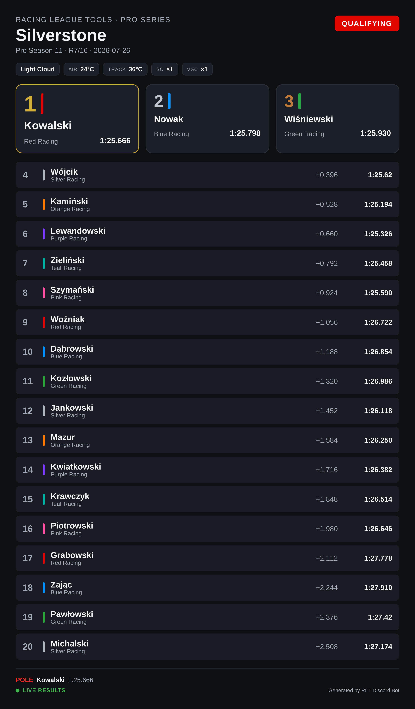
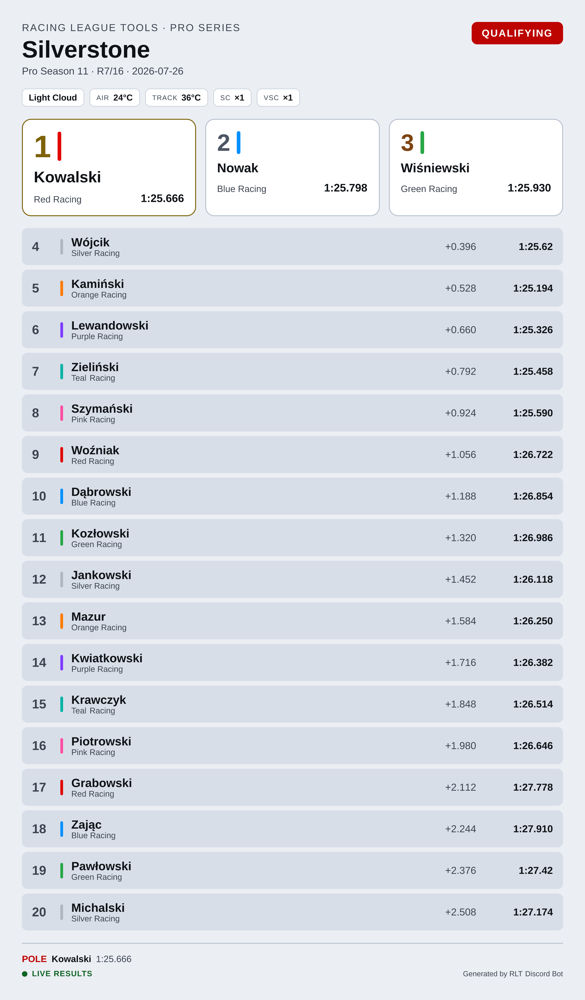
The layout matches the race card, with qualifying-specific columns: the pole box shows the pole time,
and each row carries the gap and the driver's best lap. Where the race card shows a gap to the
winner, qualifying shows INT — the interval to the driver directly ahead.
When the session was recorded from telemetry, the rows also carry the compound the best lap was set on, the number of laps completed, and top speed.
Session highlights¶
/render-race-highlights
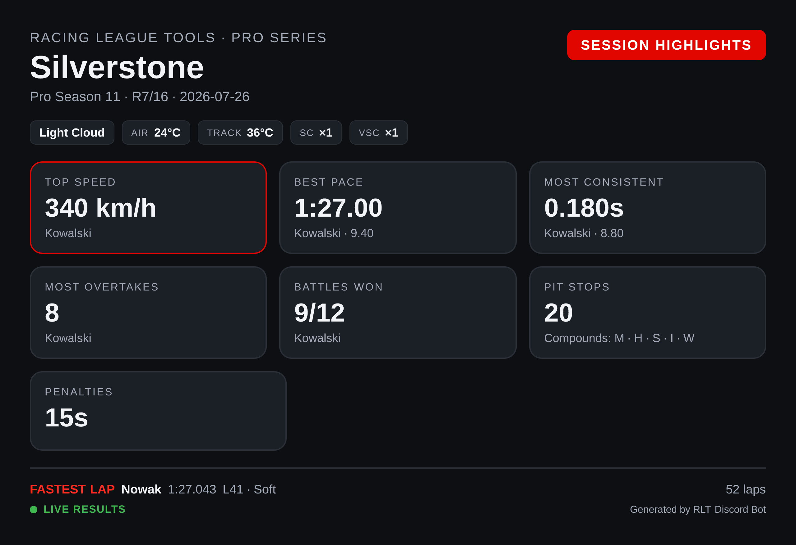
Stat tiles for the session: top speed, best pace, most consistent driver, most overtakes, battles won, pit stops with the compounds used, and total penalty time.
Needs telemetry
This card is built entirely from telemetry data. For a session whose results were entered by
hand, the command says so and points you at /render-race-results instead.
Tyre strategy¶
/render-race-strategy
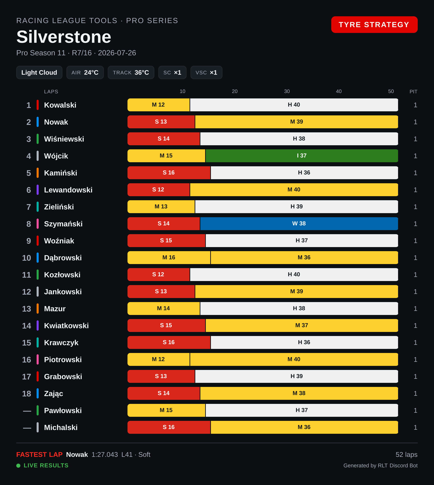
A stint chart across the full race distance: one bar per driver, split by compound with the lap count in each stint, and the number of pit stops on the right. Also needs telemetry.
Championship standings¶
/render-standings
/render-standings type:Constructors
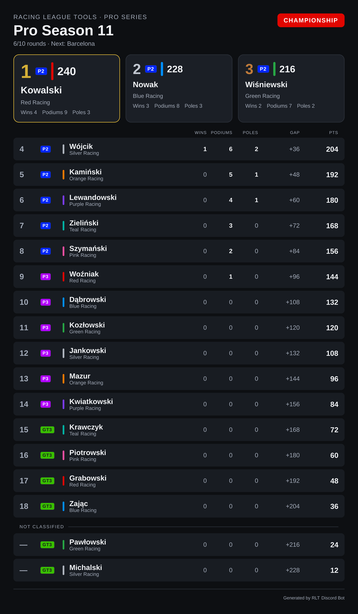
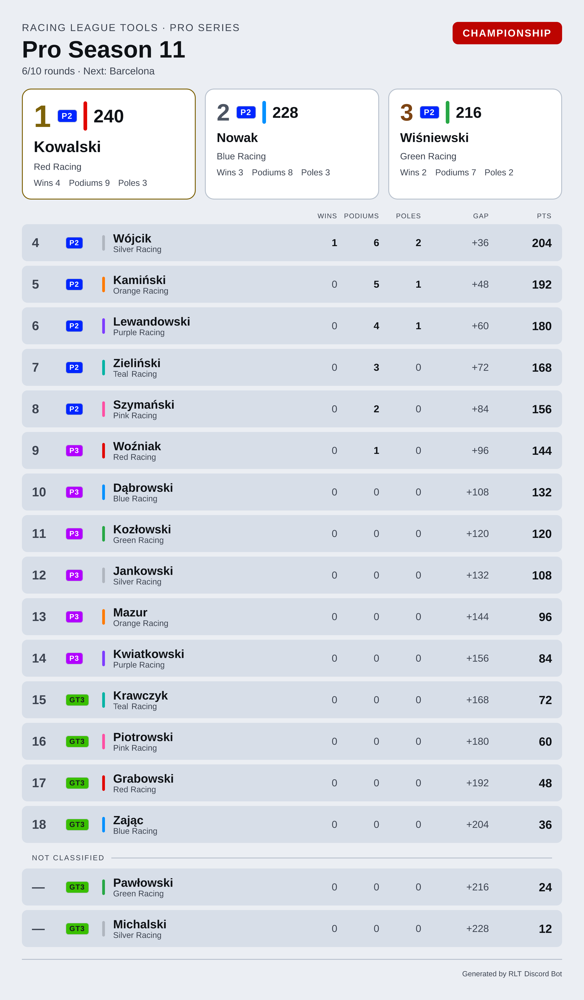
The same classification the embed lists, with room for more of it: the top three get their own boxes, and every row carries wins, podiums, poles, the gap to the leader and the points, with the driver's team colour as a stripe. The subtitle counts the championship rounds and names the next one.
| Option | Meaning |
|---|---|
season |
Season. Omitted = current. |
type |
Drivers (default) or Constructors. |
class |
One class of a multiclass season — see Multiclass seasons. |
type:Constructors swaps the drivers for teams, and each row's subtitle becomes that team's drivers:
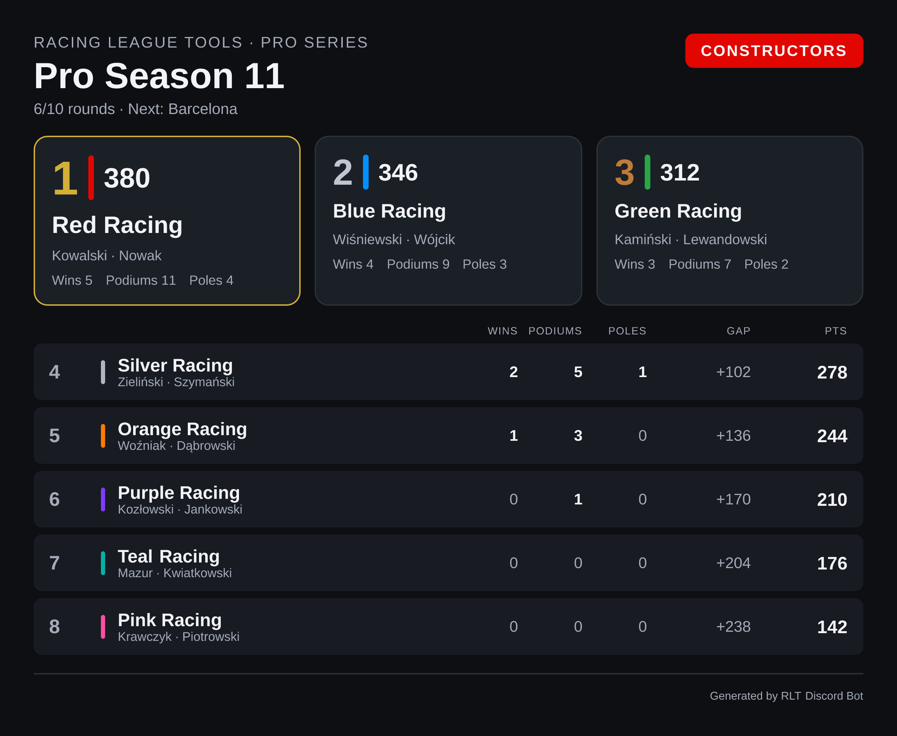
Drivers outside the classification
Racing League Tools numbers the classified entries 1..N and can leave others unnumbered — a
reserve driver who scored in a one-off, for instance. Those rows keep their points but get a —
instead of a position, under a Not classified heading at the bottom. Hiding them would eat
somebody's points; calling them "0" would read like a position.
Season lineup¶
/render-lineup
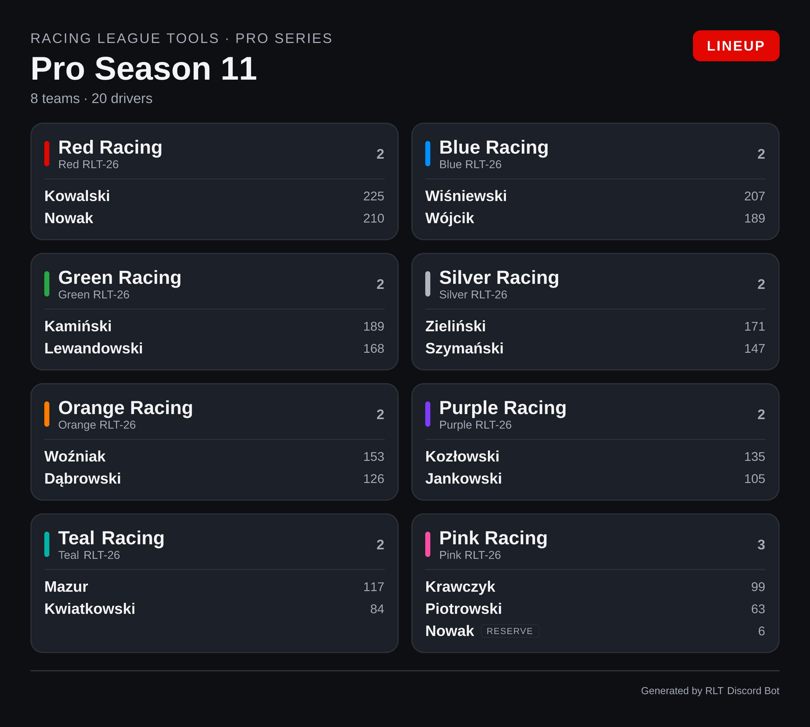
Who drives for whom this season, with each team's car and points per driver. A driver who is not in a primary seat is marked RESERVE; a driver no team claims goes to a No team section at the bottom.
| Option | Meaning |
|---|---|
season |
Season. Omitted = current. |
The card follows how your league is set up. A team-based league (F1-style) gets the team tiles above. A car-based league — endurance, where the entry is a car rather than a team — has no teams to show, so the card lists drivers in two columns with their car, grouped by class:
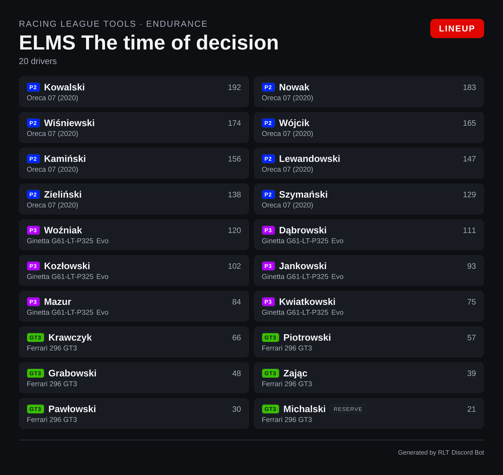
Note
A season that hasn't started has no lineup yet: Racing League Tools publishes the teams, but no drivers. The command says so rather than drawing a grid of empty tiles.
Season calendar¶
/render-calendar
/render-calendar view:Upcoming
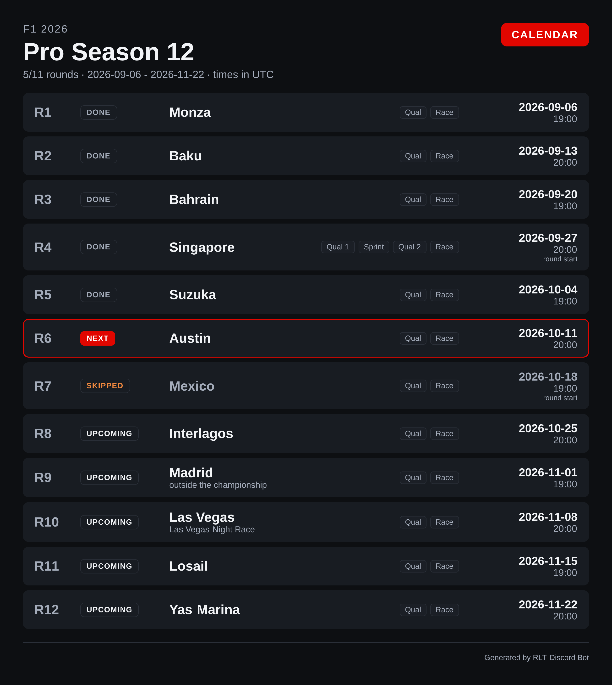
Every round with its status, track, sessions and date.
| Option | Meaning |
|---|---|
season |
Season. Omitted = current. |
view |
Full calendar (default) or Upcoming. |
Reading the card:
- DONE / NEXT / SKIPPED / UPCOMING — the round's status as a word. The next unraced round is also outlined in the accent colour; a skipped round is dimmed, because it is the one status that means this will not happen.
- Session pills — the sessions of that round, in order. A sprint weekend shows
Qual 1 · Sprint · Qual 2 · Race, numbered exactly as thesessionautocomplete numbers them. - Date and time, with
round startunder the time when Racing League Tools only publishes when the round begins rather than the race itself. - outside the championship under a round that is on the calendar but scores no championship points.
Times are in UTC
A PNG cannot adapt to each reader's time zone the way Discord's live timestamps can, so the card
states one zone in the header and sticks to it. For times in everyone's own zone plus a
countdown, use the embed: /season view:Upcoming.
Multiclass seasons¶
In a season with racing classes, every driver row on a card carries a class badge in the class's own colour, and the class column takes its width from the name column so the table stays the same width on a phone:
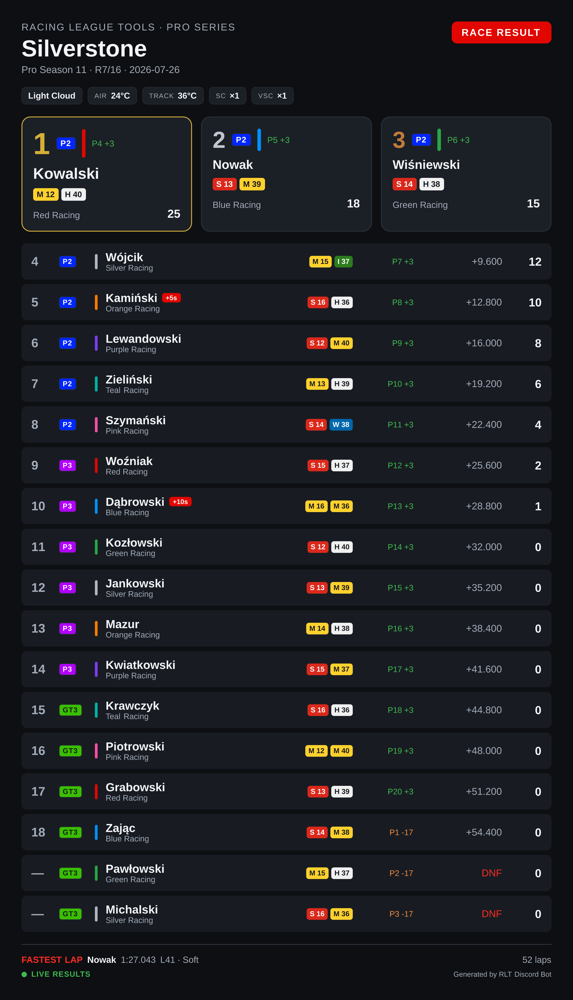
Nothing needs switching on. The badges appear when Racing League Tools reports classes for the session or season, and a single-class season renders exactly as it did before.
The class option¶
Three cards can narrow to one class: /render-race-results, /render-qual-results and
/render-standings. Pick the class from the autocomplete list.
/render-race-results class:LMP3
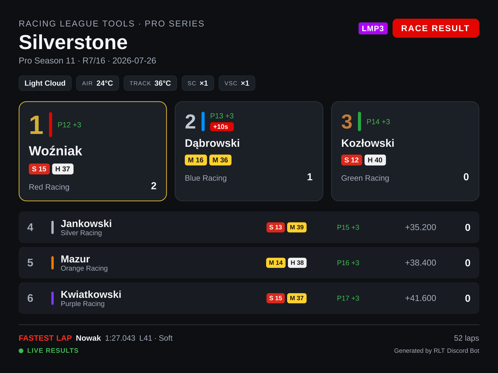
The card is then the classification of that class: positions are class positions, the fastest lap
is the class's fastest lap, and the class is named once as a pill in the header instead of being
repeated on every row. In a race, a driver a lap or more down shows +1 Lap rather than a time.
Two cards deliberately have no class option: /render-race-highlights and
/render-race-strategy compare the whole session — the tiles and the stint chart would change
meaning, not just lose rows.
What Racing League Tools doesn't publish per class
class with type:Constructors says so instead of drawing an empty table: constructor standings
exist per season, not per class. Text embeds (/standings, /race-results, /qual-results)
show the class badges too, but have no class option — their tables are the overall
classification, so the results top 10 can be ten drivers from the fastest class.
Live sessions versus manually entered results¶
How much a session card can show depends on where the results came from, and that is decided per session — a single season can contain both kinds. The season cards (standings, lineup, calendar) don't depend on telemetry at all.
| Recorded live (UDP telemetry) | Entered manually | |
|---|---|---|
| Positions, times, gaps, points, best lap | yes | yes |
| Conditions bar (weather, temperatures, SC/VSC) | yes | — |
| Tyre pills and stints | yes | — |
| Grid → finish | yes | — |
| LIVE RESULTS marker | yes | — |
/render-race-highlights, /render-race-strategy |
yes | not available |
The same race, entered by hand — same classification, none of the telemetry extras:
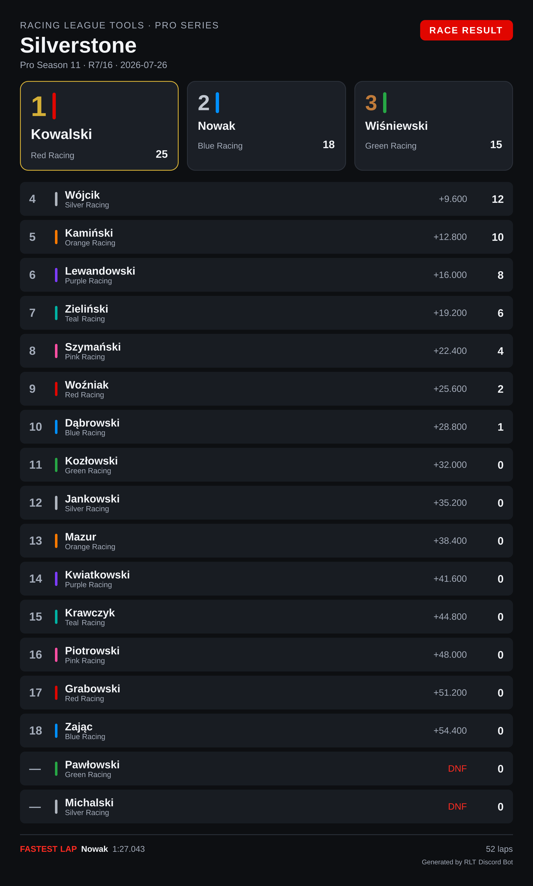
Tip
Recording sessions with live timing is what unlocks the highlights and strategy cards. See Live Timing for how to set it up.